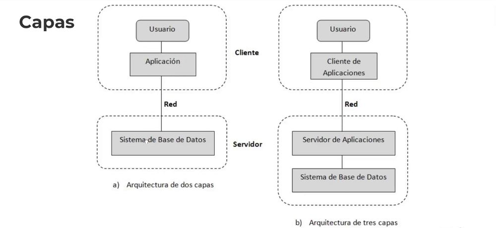
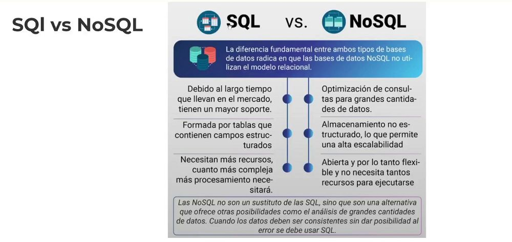
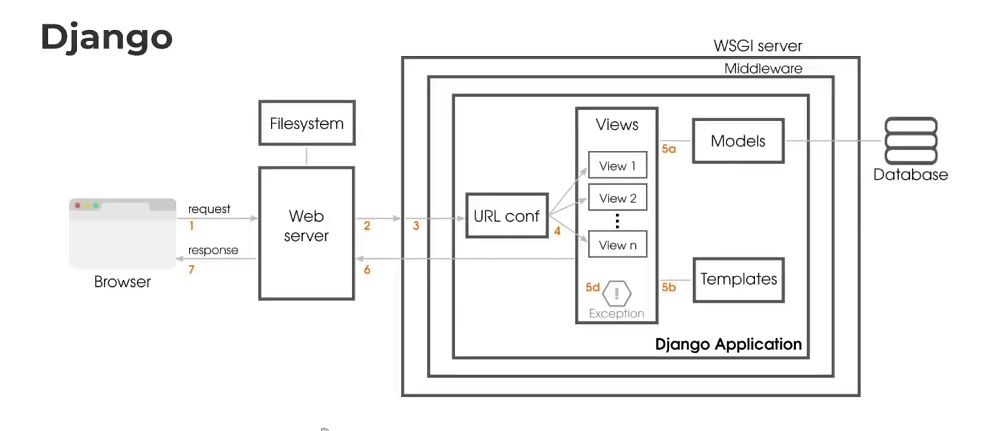
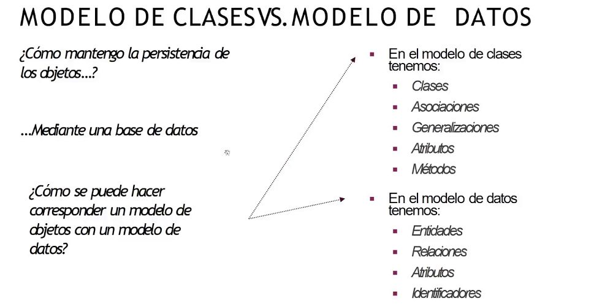
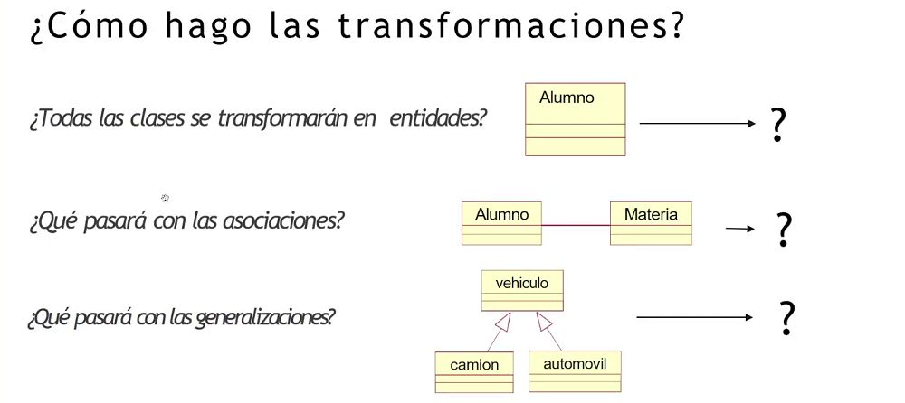
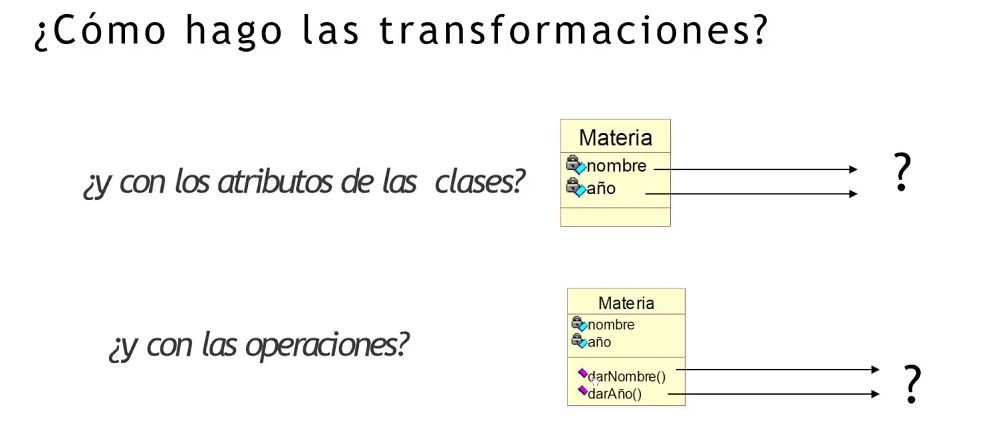
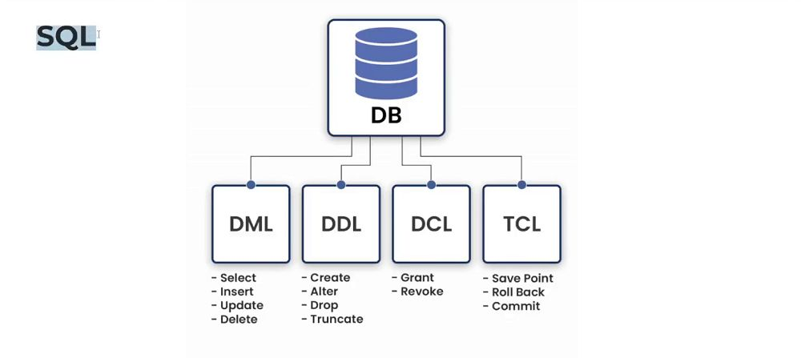
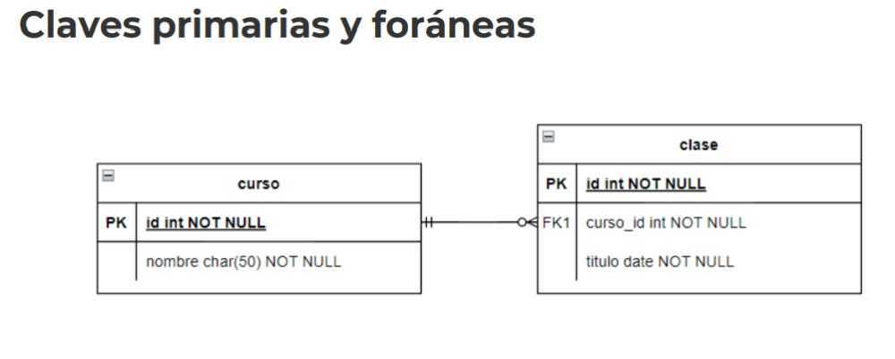

Desarrollo Django
1. ¿Qué es un Base de Datos?
Es un conjunto de datos pertenecientes a un mismo contexto y
almacenados sistemáticamente para su posterior uso. Es un forma de
almacenar datos de manera eficiente para obtener la información
necesaria en el momento que se desee.
2. Recordemos
-> API -> App
Database -> DBMS -> API -> User
-> API -> App
DBMS Database manager system
SGBD Sistema de gestion de base de datos.
3. Capas

4. SQl vs NoSQL

5. Django

6. MODELO DE CLASESVS.MODELO DE DATOS

¿Cómo mantengo la persistencia de los objetos...?
...Mediante una base de datos
¿Cómo se puede hacer corresponder un modelo de objetos con un modelo de datos
7. ¿Cómo hago las transformaciones?


¿Todas las clases se transformarán en entidades (tablas)?
Algunas clases si se persisten y otras no.. Dependerá del modelo que deseemos, de acuerdo a las funcionalidad.
¿Qué pasará con las asociaciones?
- Se convierten en relaciones, cuando tengamos asociaciones que persistan a través del tiempo.
-
¿Qué pasará conlas generalizaciones?
- Cuando tenemos menos relaciones y mas consulta de datos, podemos generalizar. -
¿y con los atributos de las clases?
- Pasan a ser atributos de las entidades
¿y con las operaciones?
- No se persisten en la tabla de base de datos relacional..
8. Herramientas que usaremos
Django mas PostgreSQL
pgAdmin4 -> Interfaz gráfica para crear base de datos.
9. SQL

-> Lo de Db, se ve poco al usar el ORM de Django.
10. Claves primarias y foráneas
